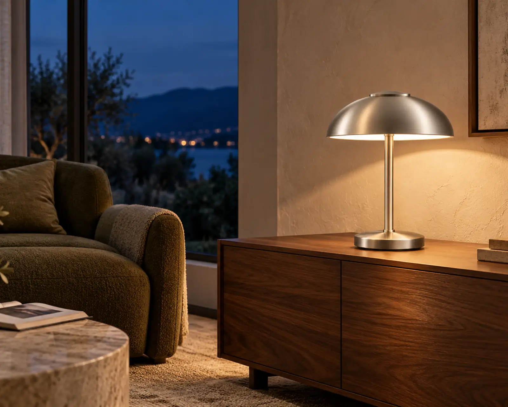
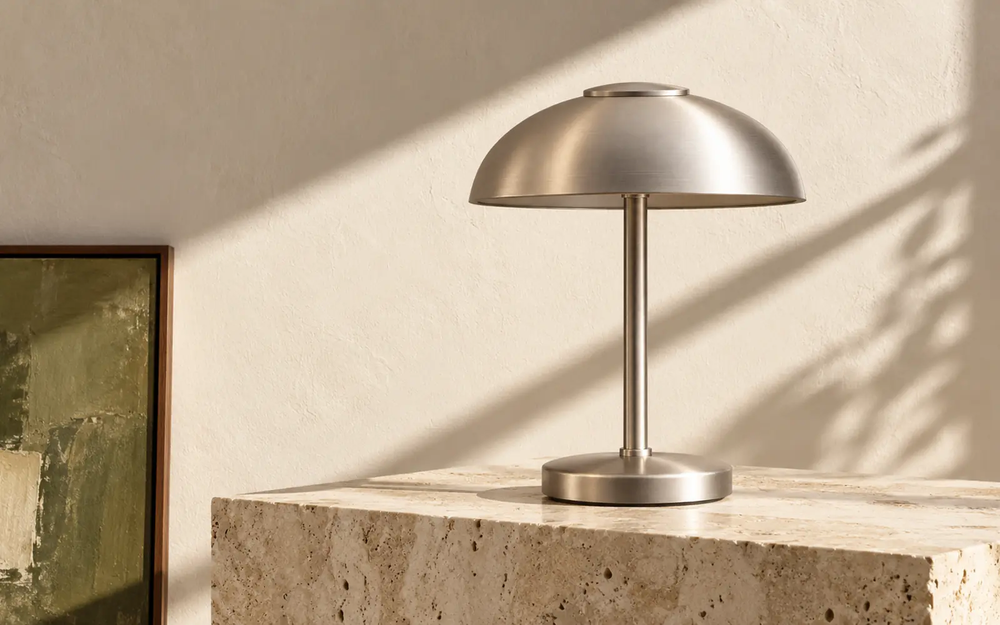
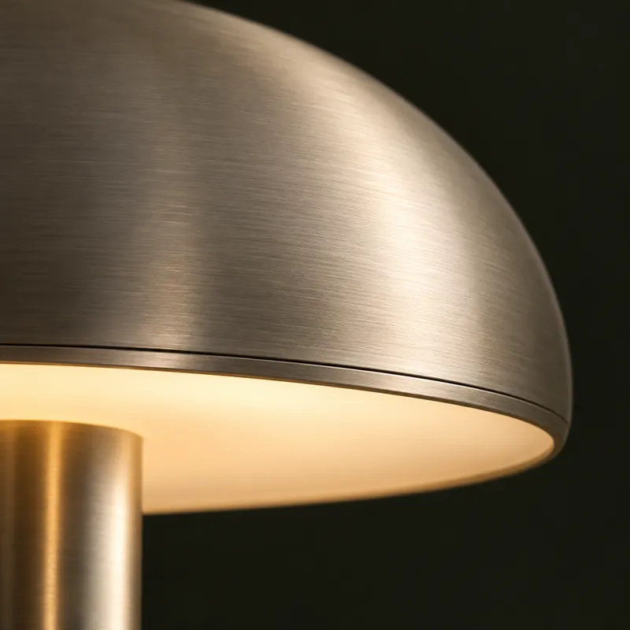
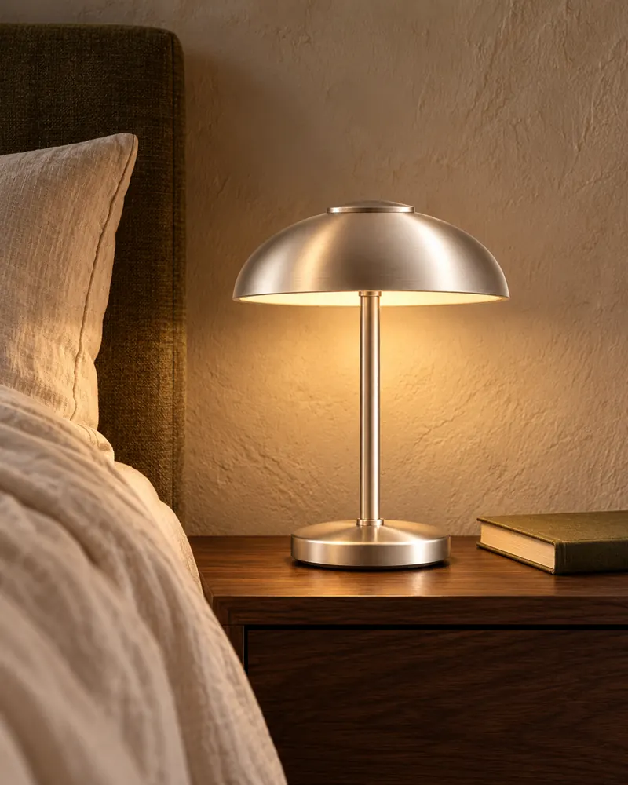
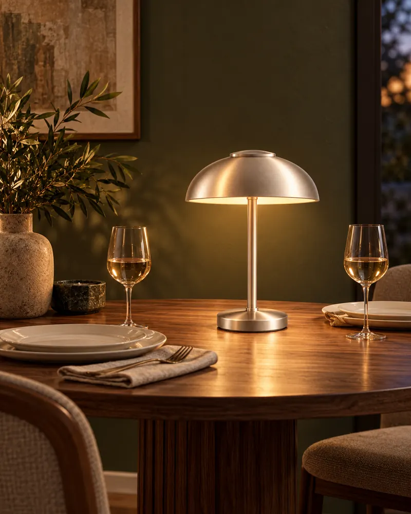

LIGHT THAT MAKES ROOM FOR YOU.
Good light.Better evenings.
Let the day settle. Ora brings a warmer feeling to the places you call your own.

THE WORLD SLOWS. THE LIGHT STAYS.
Less daylight.
More feeling.
Scroll into the quieter part of your day.
LESS OBJECT. MORE ATMOSPHERE.
A small object.
A softer way to live.
Some things change a room without asking for much space.
Ora is an exploration of portable light: a familiar silhouette, a quiet material, and a glow you can make your own. There for the last chapter. The longer conversation. The moment you get home.

SET THE FEELING
Every hour.
Its own light.
Some moments need a little focus.
Others, a little less of everything.
Find the atmosphere that feels like you.

THOUGHTFULLY SIMPLE
Nothing extra.
Everything
considered.
Beautiful before it glows.
A softly curved shade. A slender stem. The warmth of satin metal. A shape that belongs in a room, even when the light is off.
Light with a softer edge.
The concept pairs a metal shade with an opal diffuser, creating a gentle pool of light beneath it. Explore the studio to find your own balance of warmth and brightness.
A place in your everyday.
Imagined as a portable companion, Ora moves with the moment: from a quiet corner to the center of the table. One familiar object. Plenty of ways to feel at home.
WHERE LIGHT LANDS
At home.
Wherever you are.
A corner becomes your corner.
A table becomes a place to stay.
It starts with a little light.

21:40One more chapter.
For the part of the day that's just yours.

19:15Let the conversation linger.
A little glow. A little more time together.
A FEELING WORTH KEEPING
Keep a little
light for later.
Give your atmosphere a name.
Save it for your next visit, or send a little glow to someone else.